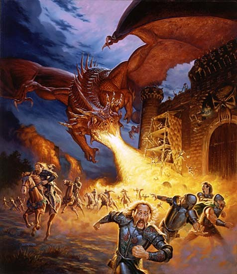

Créer une rencontre de combat
Lorsque vous créez une rencontre de combat, laissez courir votre imagination et construisez quelque chose que vos joueurs apprécieront. Une fois que vous aurez défini les détails, utilisez cette section pour ajuster la difficulté de la rencontre.
Difficulté d'une rencontre de combat
Il y a quatre catégories de difficulté pour une rencontre.
AideDD propose un calculateur pour automatiser tous les calculs présentés ici.
Facile. Une rencontre facile ne consomme pas les ressources des personnages et ne les met pas en péril. Ils pourraient perdre quelques points de vie, mais la victoire devrait être garantie.
Moyenne. Une rencontre moyenne comporte généralement un ou deux moments forts pour les joueurs, mais les personnages devraient sortir vainqueur du combat sans perte. Certains pourraient toutefois nécessiter des soins.
Difficile. Une rencontre difficile pourrait tourner très mal pour les aventuriers. Les personnages les plus faibles pourraient être mis hors-combat, et il y a une petite chance qu'un ou des personnages soient tués.
Mortelle. Ce type de rencontre est potentiellement mortelle pour un ou plusieurs personnages joueurs. Y survivre demandera souvent avoir une bonne tactique et une réflexion rapide, et le groupe risque sérieusement une défaite.
Évaluer la difficulté d'une rencontre
Utilisez la méthode suivante pour évaluer la difficulté d'une rencontre.

1. Déterminer les seuils de PX. Pour commencer, déterminez les seuils de points d'expérience (PX) pour chaque personnage du groupe. La table ci-dessous possède quatre seuils de PX pour chaque niveau de personnage, un pour chaque catégorie de difficulté. Utilisez le niveau d'un personnage pour déterminer ses seuils de PX, et répétez ce point pour chaque personnage du groupe.
| Niveau | Facile | Moyenne | Difficile | Mortelle |
| 1 | 25 | 50 | 75 | 100 |
| 2 | 50 | 100 | 150 | 200 |
| 3 | 75 | 150 | 225 | 400 |
| 4 | 125 | 250 | 375 | 500 |
| 5 | 250 | 500 | 750 | 1 100 |
| 6 | 300 | 600 | 900 | 1 400 |
| 7 | 350 | 750 | 1 100 | 1 700 |
| 8 | 450 | 900 | 1 400 | 2 100 |
| 9 | 550 | 1 100 | 1 600 | 2 400 |
| 10 | 600 | 1 200 | 1 900 | 2 800 |
| 11 | 800 | 1 600 | 2 400 | 3 600 |
| 12 | 1 000 | 2 000 | 3 000 | 4 500 |
| 13 | 1 100 | 2 200 | 3 400 | 5 100 |
| 14 | 1 250 | 2 500 | 3 800 | 5 700 |
| 15 | 1 400 | 2 800 | 4 300 | 6 400 |
| 16 | 1 600 | 3 200 | 4 800 | 7 200 |
| 17 | 2 000 | 3 900 | 5 900 | 8 800 |
| 18 | 2 100 | 4 200 | 6 300 | 9 500 |
| 19 | 2 400 | 4 900 | 7 300 | 10 900 |
| 20 | 2 800 | 5 700 | 8 500 | 12 700 |
2. Déterminer les seuils de PX du groupe. Pour chaque catégorie de difficulté, ajoutez les seuils de PX des personnages. Cela détermine les seuils de PX du groupe. Vous aurez au final quatre totaux, un pour chaque catégorie de difficulté. Par exemple, si votre groupe est composé de trois personnages de niveau 3 et d'un personnage de niveau 2, les seuils de PX du groupe seront les suivants :
Facile : 275 PX (75 + 75 + 75 + 50)
Moyenne : 550 PX (150 + 150 + 150 +100)
Difficile : 825 PX (225 + 225 + 225 + 150)
Mortelle : 1400 PX (400 + 400 + 400 + 200)
Notez ces chiffres, car vous les utiliserez pour chaque rencontre de votre aventure.
3. Déterminer les PX des monstres. Additionnez les valeurs de PX de chaque monstre qui participe à la rencontre. Tout monstre possède une valeur de PX qui est indiquée dans son bloc de stat.
4. Ajuster la valeur de PX des monstres suivant leur nombre. Si la rencontre comprend plus d'un monstre, appliquez un multiplicateur aux PX totaux des monstres. Plus les monstres sont nombreux, plus vous allez faire de jets d'attaque contre les personnages lors d'un round donné, et plus la rencontre devient dangereuse. Pour estimer correctement la difficulté de la rencontre, multipliez la valeur des PX totaux des monstres par le multiplicateur correspondant indiqué dans la table ci-dessous.
Par exemple, si vous avez une rencontre qui comprend quatre monstres pour une valeur totale de 500 PX, multipliez cette valeur par 2, ce qui donne au final 1000 PX. Cela ne change pas le nombre de PX que les aventuriers reçoivent s'ils battent les monstres, cela sert juste à calculer la difficulté de la rencontre.
En faisant ce calcul, ne comptez pas les monstres dont le facteur de puissance est nettement inférieur à celui des autres monstres du groupe, sauf si vous pensez que les monstres les plus faibles contribuent de manière significative à la difficulté de la rencontre.
| Nombre de monstres |
Multiplicateur |
| 1 | x 1 |
| 2 | x 1,5 |
| 3-6 | x 2 |
| 7-10 | x 2,5 |
| 11-14 | x 3 |
| 15 ou plus | x 4 |
5. Comparer les PX. Comparez la valeur de PX des monstres aux seuils de PX du groupe. Le seuil égal à la valeur de PX ajustée détermine la difficulté de la rencontre. S'il n'y a pas d'égalité, utilisez le seuil le plus proche inférieur à la valeur de PX ajustée. Par exemple, une rencontre avec un gobelours et trois hobgobelins donne une valeur de PX ajustée de 1000, ce qui en fait une rencontre difficile pour notre groupe de trois personnages niveau 3 et un personnage niveau 2.
Taille du groupe
FACTEUR DE PUISSANCE
Lors de la constitution d'une rencontre ou d'une aventure, surtout aux niveaux inférieurs, faites preuve de prudence lors de l'utilisation des monstres dont le facteur de puissance est plus élevé que le niveau du groupe. Une telle créature pourrait infliger suffisamment de dégâts en une seule action pour anéantir des PJ de bas niveau. Par exemple, même si un ogre n'a qu'un facteur de puissance de 2, il peut tuer un magicien de niveau 1 d'un seul coup.
Les lignes directrices précédentes supposent que votre groupe est constitué de trois à cinq aventuriers. Si votre groupe comporte moins de trois personnages, utilisez le multiplicateur de PX de la catégorie suivante. Par exemple, utilisez un multiplicateur de 1,5 pour un combat contre un seul monstre (et utilisez un multiplicateur de 5 pour un groupe de 15 ou plus créatures). Si par contre le groupe comporte plus de cinq personnages, utilisez le multiplicateur de PX de la catégorie inférieure (utilisez un multiplicateur de 0,5 pour un seul monstre).
Rencontres multiples
Parfois, les aventures et les rencontres que vous concevez comportent de nombreux ennemis, mais le groupe n'est pas confronté à tous en même temps. Les ennemis peuvent arriver en vague successives par exemple. Pour de telles rencontres, traitez chaque groupe de rencontre (chaque vague d'ennemis) comme une rencontre distincte pour déterminer sa difficulté.
Un groupe ne bénéficie pas d'un repos court entre les combats de ce type de rencontres, de sorte que les aventuriers ne seront pas en mesure de dépenser des DV pour regagner des points de vie ou de récupérer des capacités qui nécessitent un repos court pour ce faire. En général, si le total de PX des monstres d'une rencontre multiple est supérieur à un tiers du total journalier de PX d'un groupe (voir ci-dessous), la rencontre sera plus difficile que la somme des groupes qui la composent.
Construire des rencontres avec un budget
Vous pouvez construire une rencontre si vous connaissez la difficulté souhaitée. Les seuils PX du groupe vous donne un budget de PX que vous pouvez dépenser en monstres pour construire des rencontres faciles, moyennes, difficiles ou mortelles. N'oubliez toutefois pas que les groupes de monstres consomment plus de budget que leur valeur de PX de base indiquée (voir étape 4).
Par exemple, en utilisant le groupe de l'étape 2, vous pouvez construire une rencontre moyenne en faisant en sorte que la valeur de PX ajustée des monstres soit d'au moins 550 PX (le seuil de PX du groupe pour une rencontre moyenne) et inférieure à 825 PX (le seuil de PX du groupe pour une rencontre difficile). Un monstre unique avec un facteur de puissance de 3 (comme une manticore ou un ours-hibou) vaut 700 PX, de sorte que c'est une possibilité. Si vous voulez une paire de monstres, chacun comptera pour 1,5 fois sa valeur de base de PX. Une paire de loups sanguinaires (200 PX chacun) ont une valeur de PX ajustée de 600, ce qui en fait également une rencontre moyenne pour le groupe.
Une journée d'aventure
Dans des conditions d'aventures typiques et avec une chance moyenne, la plupart des groupes d'aventuriers peuvent gérer entre six et huit rencontres moyennes ou difficiles par jour. Si l'aventure a des rencontres plus faciles, le groupe peut en affronter plus ; si les rencontres sont plus mortelles, il en passera moins.
De la même manière que vous évaluez la difficulté d'une rencontre, vous pouvez utiliser les valeurs de PX des monstres et autres adversaires dans une aventure comme guide pour estimer jusqu'où le groupe est susceptible de progresser. Pour chaque personnage du groupe, additionnez la valeur quotidienne de PX suivant le niveau du personnage dans la table ci-dessous, pour obtenir un total par journée d'aventure pour tout le groupe. Ce total donne une estimation grossière des PX totaux de rencontres que le groupe peut gérer avant de devoir prendre un repos long.
Niveau |
PX par jour par PJ |
Niveau |
PX par jour par PJ |
|
| 1 | 300 | 11 | 10 500 | |
| 2 | 600 | 12 | 11 500 | |
| 3 | 1 200 | 13 | 13 500 | |
| 4 | 1 700 | 14 | 15 000 | |
| 5 | 3 500 | 15 | 18 000 | |
| 6 | 4 000 | 16 | 20 000 | |
| 7 | 5 000 | 17 | 25 000 | |
| 8 | 6 000 | 18 | 27 000 | |
| 9 | 7 500 | 19 | 30 000 | |
| 10 | 9 000 | 20 | 40 000 |
Repos courts
En général, pour une journée complète d'aventure, un groupe prendra deux repos courts, au premier et au second tiers de la journée.
Modifier la difficulté d'une rencontre
Une rencontre peut être plus facile ou plus difficile suivant l'endroit où elle a lieu et la situation. Augmentez la difficulté de la rencontre d'un cran (de facile à moyenne, par exemple) si les personnages ont un handicape que leurs ennemis n'ont pas. Réduire la difficulté d'un cran si les personnages ont un avantage que leurs ennemis n'ont pas. Toute avantage ou handicape supplémentaire pousse la rencontre d'un cran dans la direction appropriée. Si les personnages ont à la fois un avantage et un handicape, les deux s'annulent.
Exemples d'handicapes de situation :
- L'ensemble du groupe est surpris,mais l'ennemi ne l'est pas.
- L'ennemi est à couvert, mais le groupe ne l'est pas.
- Les personnages sont incapables de voir l'ennemi.
- Les personnages prennent des dégâts à chaque round à cause d'un effet environnemental ou d'une source magique, mais pas l'ennemi.
- Les personnages sont suspendus à une corde, au milieu de l’ascension d'un mur ou d'une falaise, cloués sur place, ou toute autre situation qui entrave considérablement leur mobilité et en fait des cibles faciles.
Les avantages de situation sont similaires aux handicapes, sauf qu'ils bénéficient aux personnages au lieu de bénéficier aux ennemis.
Rencontres de combat sympas
Les exemples suivants peuvent ajouter plus de plaisir et de suspense à une rencontre de combat :
- Des éléments de terrain qui ajoutent des risques inhérents à la fois aux personnages et à leurs ennemis, comme un pont de corde effilochée ou une mare de boue verte.
- Des éléments de terrain qui offrent un changement d'élévation, comme un puits, des piles de caisses vides, une corniche ou un balcon.
- Des éléments qui permettent ou forcent les personnages et leurs ennemis à se déplacer, comme des lustres, des barils de poudre ou d'huile, ou un piège à lames tourbillonantes.
- Des ennemis situés dans des endroits difficiles à atteindre ou dans des positions défensives, de sorte que les personnages qui attaquent normalement à distance soient obligés de se déplacer sur le champ de bataille.
- Différents types de monstres qui travaillent ensemble.